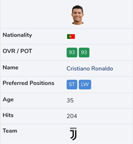
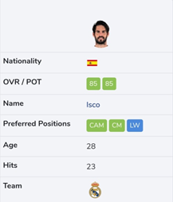

Rule Book
Basic Rules
1. You will be given a purse of 1 BILLION to spend from.
2. We have a total of 420 players present in our player pool from which you can bid and buy your dream 11 . Remember your main goal is to create a squad of 11 players with maximum rating .
Number of players in each position
• LEFT WING or LEFT MIDFIELDER : 40
• RIGHT WING or RIGHT MIDFIELDER : 40
• STRIKERS or CENTRE FORWARD : 40
• MIDFIELDERS : 100
• CENTRE BACKS : 80
• LEFT BACK : 40
• RIGHT BACK : 40
3. Above mentioned are the positions according to which players will be released by us.
4. Players have been distributed slotwise for your convenience.Each slot will be purely dedicated to a particular position only. Each slot will have 20 players in it.For example : IF the first slot of the first day starts with the position of LEFT BACK , then in the first slot , 20 players out of the 40 LEFT BACK players will be present for you to bid on.After the completion of slot 1 ,slot 2 will contain the next 20 players OF THE SAME POSITION (in this case the rest of 20 LEFT BACK players).
5. The slots have been evenly distributed with players of all ratings in all the slots. You can buy a maximum of two players from a slot , but you can bid for all of them.
6. Each day has a total of 3 slots with 20 players in each slot.
7. Each day before the first slot of the day starts , a list of all the 60 players (that are going to be shown on that day) will be released.
8. The base prices of the players would be according to their ratings (taken from fifaindex.com)
BASE PRICES
95 AND ABOVE : 90 MILLIONS
90 - 94 : 80 MILLIONS
85-89 : 70 MILLIONS
80-84 : 60 MILLIIONS
75-79 : 50 MILLIONS
9. We strictly instruct you to follow the following formations only
4-4-2 (4 players in the defence ; 4 players in the midfield ; 2 attackers)
4-3-3 (4 players in the defence ;3 players in the midfield ; 3 attackers)
3-4-3 (3 players in the defence ; 4 players in the midfield ; 3 attackers)
4-2-3-1(open to your ideas,but make sure your team fits the formation)
Note that no particular formation has any points attached to it, these are being given just to make sure that you have options
10. The card of each player displayed in the auction will display
• PLAYER’S NAME
• PLAYER’S RATING (taken form fifaindex.com)
• PLAYER’S PRIMARY PLAYING POSITION (taken form fifaindex.com)
Position Rules
There is a primary position which is specified on each and every player's card.
However, as you know football players can play in more than one position. So we have some rules regarding that.
If you wish… You can play the players in positions which are different than that given on the card but the ratings will be affected accordingly.
*For your reference, on fifaindex.com, positions in…
BLUE—ATTACK
GREEN—MIDFIELD
YELLOW—DEFENCE
ORANGE—GOALKEEPER
Here are the rules—
1. If you play a player in any other one of his specified alternate positions, his rating will remain the same. The alternate positions will be considered as per fifaindex.com.
For example, here in Ronaldo's profile at fifaindex.com, he has 2 positions—ST & LW (with ST being considered as the primary position and LW being considered as the alternate position). So if you play him in any of these two positions, his rating will not change i.e. it will remain 93.

2. Now… You may also wish to play him at the RW position. But as RW is not one of his specified alternate positions although it is an attacking position and CR7 is an attacker, so his rating will be reduced by a factor of 2 points only i.e. while calculating the final results we will consider his rating as 91.
So the bottom-line is that if you play a defender in defence, midfielder in midfield, attacker in attack… But not in one of the player's specified position according to fifaindex.com, the rating will be reduced by a factor of 2.
3. To determine how a player will be classified as an attacker/midfielder/defender, we will consider the primary position of the player as per fifaindex.com.
For example, here in Isco's profile at fifaindex.com, he has 3 positions—CAM, CM & LW. Of the three of his given positions two are in midfield (CAM & CM) and one is in attack (LW). But his primary position is CAM which as mentioned above is a midfield position. So, Isco will be considered a midfielder in our auction even though he has an alternate attacking position as well.

4. Now, if you play him in any position in midfield (like CDM) other than CAM & CM, then according to Rule 2, his rating will be reduced by a factor of 2. But if you play him at LW, his rating will remain the same as it is one of his specified alternate positions although he is being considered as a midfielder. But if you choose to play him in any other attacking position apart from LW, his rating will be reduced by a factor of 4 since he is a midfielder and you're playing him in attack.
So in short, the further away you play a player from his playing zone… The higher the deductions.
That is, if you play an attacker in midfield in a position which is not his alternate position, the rating will be reduced by a factor of 4. If you play an attacker in defence the rating will be reduced by a factor of 6!
Similarly, if you play a midfielder in attack, in a position which is not his alternate position, the rating will be reduced by a factor of 4. And if you play him in defence in a position which is not one of his specified alternate positions, the rating will still be reduced by a factor of 4 only.
5. You cannot play a goalkeeper as an outfield player and vice-versa. If however, for some reason, you do… We will consider the rating to be ZERO!
We hope the rules regarding position are clear to you. However, in case of any discrepancy or doubt you can contact us.